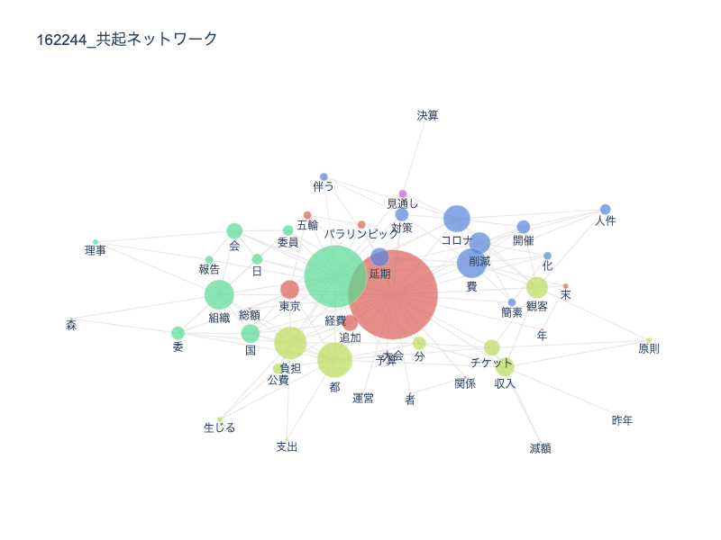

オリンピックの比較
1960年のオリンピックと2020年のオリンピックを比較していく。
私たちの班は『予算』というワードに着目して資料を集めた。
単語頻度
ネットワーク

考察
予算に関する頻繁に上がっている単語を見てみると、2020年では「削減」や「負担」、「減額」等のマイナスイメージのワードが多数上がっている。
一方で1960年の方には一切見られない。
このことから、双方で国民からの捉え方が大きく違うのではないかと考えた。
また、1960年には「世界」、「協力」という文字があるが2020年には国際関連のワードがあまり見られない。
実際に私も2020年のオリンピックを体験したが国際協力の印象は強くなかった。
1960年のオリンピックでは違ったのかと推測する。
インタビューにて
本来私たちは予算ではなく世論の違いについて研究したかったのだが、2020年には多数記事が存在するにも関わらず、1960年には殆ど世論に関する記事が出てこなかった。
その後インタビューの授業で1960年のオリンピックについて話す機会があったため、尋ねてみた。
すると、当時は歓迎ムードが強く、2020年のオリンピックとは全く違ったという。
国民が問題視しているから記事が多数生まれるのであって、1960年に記事がなかったのは書く必要がなかったからだと分かった。
テキストの単語数は勿論だが、そもそもの記事の数から考察することもできるのだということは新しい発見だった。